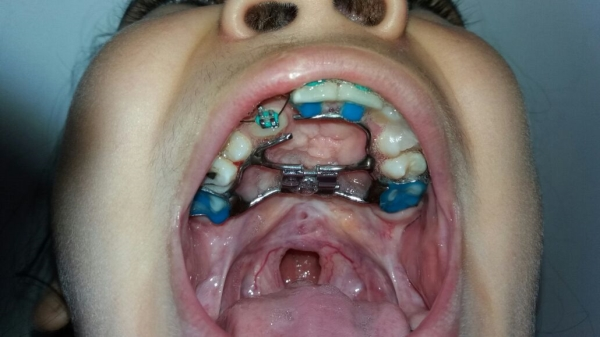

Ortodoncia
Debido a las anomalías es posible que los dientes no logren erupcionar normalmente, por lo que a menudo es necesario un tratamiento de ortodoncia, que puede incluir interconsulta con periodoncia y rehabilitación, por la falta de uniformidad en los tejidos comprometidos.

Tomado: Clínica Posgrado Odontopediatría, Universidad de Cartagena, Facultad de Odontología.